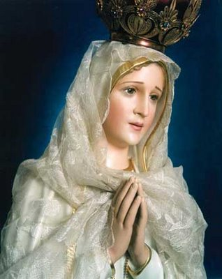
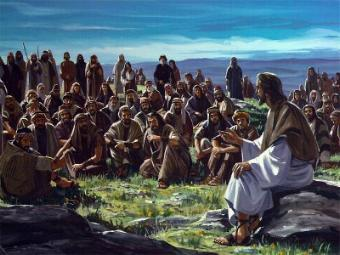
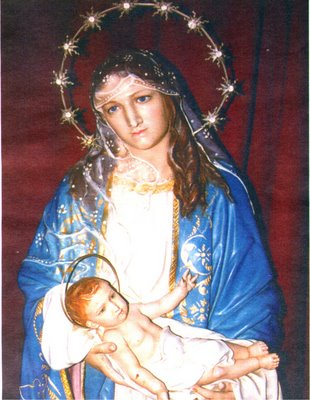

As famílias são a base de nossa sociedade
e de nossa nação. Todavia, infelizmente, em
nosso século XXI, muitas
estão mergulhadas num sono de indiferença e de interesses pessoais, que conduz os seus membros
a um assustador e impressionante “caos familiar”
. De modo lamentável e sem uma causa real, está acontecendo
à separação de muitos casais, o aumento da liberdade sexual dos homens e o consequente
recrudescimento da emancipação sexual precoce da mulher, inclusive, com o absurdo
crescimento de uma anormalidade totalmente irracional: das mulheres procurarem ser
mães mesmo não estando casadas!
Esta realidade levou muitos pesquisadores
a buscarem caminhos para explicar aquelas ocorrência, atribuindo-as principalmente,
a secularização dos costumes, com o gradual e continuo afastamento de Deus e das
coisas sagradas, numa verdadeira dessacralização dos costumes. Também não pode
ser esquecida, a irrestrita permissividade, atitudes de emacipação assumidas por
jovens e adultos, em busca de uma liberdade que escraviza, que fere e distorce
os conceitos da moral, da harmonia e da fidelidade. Junto com estes, muitos outros
acontecimentos têm contribuído para o
“caos familiar”, clamando por uma providência eficaz e
imediata de cada pai e de cada mãe de família, que amam os seus filhos e quer
a plena e total felicidade de cada um deles. Isto porque, a continuidade e o
crescimento destes fatos, poderão conduzir a uma incontrolável “violência”, que resultará
na companhia de uma abominável
“impiedade”, aprofundando de modo terrível e perigoso
a decaída moral, que envolta pelo ódio e pela irracionalidade fatalmente
conduzirá as famílias ao abismo mais profundo da infelicidade! Por isso
mesmo, torna-se imperioso, muito mais importante e merecedor dos
melhores cuidados, a educação e o exemplo que os Pais devem dar
aos seus filhos.
A responsabilidade dos Pais e
Padrinhos deve ser assumida com consciência e decisão, a fim de que as
crianças recebam em plenitude, os benefícios de uma harmoniosa e digna vivencia
familiar. É assim que devem procurar viver como autênticos cristãos, no trabalho,
no lar e no lazer. O “bom exemplo”
que demonstrarem, será o melhor ensinamento para as crianças
e sem dúvida, será uma contribuição concreta para a boa formação do caráter dos
filhos e afilhados. Uma palavra de conselho ou repreensão, tem a sua validade
nos momentos oportunos e adequados. Todavia, o “bom exemplo” dos Pais e também dos Padrinhos,
são muito mais importantes e atuam decisivamente na vida do adolescente.
 Isto significa dizer, que se os Pais e
Padrinhos desejam que os seus filhos e afilhados sejam obedientes, dedicados
ao trabalho, pessoas normais e tementes a Deus, comecem a educá-los desde
criança, não se esquecendo todavia, de iniciar primeiro com a educação deles,
ou seja, com a educação que eles precisam ter a fim de podê-la transmitir
de modo eficiente e real aos seus filhos.
Isto significa dizer, que se os Pais e
Padrinhos desejam que os seus filhos e afilhados sejam obedientes, dedicados
ao trabalho, pessoas normais e tementes a Deus, comecem a educá-los desde
criança, não se esquecendo todavia, de iniciar primeiro com a educação deles,
ou seja, com a educação que eles precisam ter a fim de podê-la transmitir
de modo eficiente e real aos seus filhos.
Vamos citar alguns
exemplos para que o assunto fique bem claro:
1 – A mãe que trata os filhos na
base do grito e da tapa, sem qualquer diálogo, não precisa esperar outro
resultado. À medida que as crianças crescerem instintivamente vão dar o
“troco”.
A experiência comprova que aquelas crianças darão origem a pessoas cada
vez mais violentas e agressivas.
2 – O pai que diante da televisão fica
"elogiando"
as mulheres que aparecem na tela, além de faltar com o respeito e consideração
à própria esposa, enfraquece os laços da autoridade paterna e estimula o desejo
da sexualidade nos seus filhos. Estas mesmas considerações são endereçadas
as mães que têm igual procedimento diante da televisão, elogiando
os homens que aparecem na tela.
3 – Pai ou Padrinho que gosta de ostentar
o título de “conquistador”, inclusive que gosta de olhar para todas as mulheres na rua ou na praia,
com certeza vai colocar uma terrível “minhoca”
na cabeça de seus filhos, desenhando em seu subconsciente
um conceito errado sobre a verdadeira vida em família. Estas mesmas considerações
são endereçadas também as mães que têm igual procedimento em casa, na rua, ou na
sociedade que frequentam.
4 – Mãe ou Madrinha
que usam vestidos “muito decotados”
, e também “muito curtos”
ou “muito apertados”
para realçar as suas formas, distorce completamente o sentido
da boa moral familiar, deixando confusa a cabeça de um jovem em formação, ocasionando
as reações mais diversas, como por exemplo: nervosismo, rancor, gestos bruscos, que são
manifestações que atestam o repúdio do jóvem a aquele comportamento. Há homens
que apreciam esta vaidade das mulheres e até aplaude! Mas com certeza, a maioria
não desejaria que esta realidade acontecesse com as suas esposas e com as
suas filhas.
5 – Por isso mesmo, cuidado com as
Novelas da Televisão! Cuidado com os seus abomináveis exemplos. Muitas delas
induzem ao crime, ao vício da bebida ou da droga e primordialmente, convida ao
exercício do sexo prematuro, ao adultério, a traição conjugal, a briga entre os casais,
assim como a separação e a busca de uma situação financeira confortável "a qualquer preço". Os Pais devem
estar atentos e devem dar aos filhos uma explicação lógica e correta, sobre
algum comportamento desajustado que for evidenciado na TV.

É extremamente edificante os Pais,
nas oportunidades certas, procurar orientar os seus filhos pelo caminho do “bem”, dando o bom exemplo,
estando sempre abertos ao diálogo, evitando
“as mentiras”, sendo autênticos nos conselhos e orientações,
ensinando o procedimento correto na convivência do lar e no ambiente social em que
habitam, sobretudo, ensinando-os a rezar, a conhecer e amar a Deus. A presença
do Senhor é primordialmente necessária no cotidiano da família. Por isso, ela
deve ser cultivada com insistência e sinceridade.
Assim sendo, os Pais devem dispor de um
tempo, pequeno que seja, para ensinar os filhos a rezar e lhes instruir com
algum conhecimento de religião. Por isso, na faixa de idade recomendada, devem
colocá-los no Catecismo Paroquial, a fim deles poderem conhecer os fundamentos
da religião, os quais são importantes e necessários a vida de todos nós.
È necessário também,
que as crianças acompanhem os seus pais nos passeios, nas compras, no lazer, na
Igreja, a fim de que possam adquirir o hábito de valorizar ainda mais a companhia dos
pais e assim, possam sentir prazer em copiar o bom exemplo, os ensinamentos e
todas as suas orientações paternas.
Ao transmitir a
educação aos seus filhos, os Pais deverão também ter o cuidado de lhes ensinar o
comportamento correto dentro da Igreja, mesmo antes das celebrações, não
permitindo que as crianças fiquem correndo de um lado para o outro, subindo no
altar ou permanecendo brincando nos degraus de acesso, transformando a Igreja
num Parque Infantil. Isto porque, este procedimento incomoda e interfere na
liturgia, também aborrece os idosos e as pessoas que querem permanecer
interiorizadas em suas orações. Para que as crianças não tenham esse hábito,
é necessário os Pais ensiná-las e dialogar com elas, explicando-lhes e
as educando com o devido respeito pelas coisas
sagradas.
Lidar com as crianças exige calma,
observação e pedagogia, sobretudo, muito amor. Porque na base do castigo e da
repreensão, ninguém conseguirá educá-las.
Isto significa dizer,
que ao longo da existência, os pais não devem somente ficar preocupados com o
trabalho, com o que precisarão produzir para ganhar mais dinheiro. Sem dúvida,
isto é muito importante e necessário, mas os filhos não podem e não devem ser
esquecidos. Esta é uma condição essencial para que a família alcance a almejada
felicidade vivencial.
Também, os pais
deverão ser curiosos em saber e conhecer, quem são as companhias de seus filhos
nos estudos, nos passeios e nas brincadeiras. Não poderão ficar indiferentes ao
desempenho escolar das crianças. Terão que exigir sempre mais e aplaudi-las
quando elas alcançarem sucesso nos estudos.

Devem também ser cuidadosos na
escolha do Nome da criança.
O Nome deve ser escolhido com critério e
responsabilidade, não se esquecendo de que amanhã aquela criança será um homem
ou uma mulher, e eles não deverão envergonhar-se de seu próprio Nome. Isto porque,
um Nome “feio” ou
“estranho”,
poderá lhes causar problemas discriminatórios, inclusive poderá atuar no
próprio íntimo de cada um causando certa inibição, ou certo constrangimento, por
causa do “nome esquisito” que foi colocado pelos Pais. Por isso, os Pais devem pensar e decidir juntos,
qual o melhor nome para colocar nos filhos, porque também, este cuidado evitará
que eles sejam humilhados pelos companheiros e em consequência venham até adquirir
um “trauma”,
que muito poderá interferir no êxito de sua vida.
Também os Padrinhos,
que foram escolhidos com tanto amor, devem procurar dar o bom exemplo e quando
necessário, devem dar bons conselhos ao afilhado.
Por isso mesmo, os
pais não devem escolher os padrinhos visando vantagens materiais, posição social
ou visando ganhar bons presentes. O Catecismo Católico determina que os
padrinhos sejam casados na Igreja e no Civil, que frequentem a Santa Missa e
sejam bons cristãos. Porque na verdade, só assim eles poderão colaborar
efetivamente na educação e na formação do bom caráter do afilhado.
As Normas e Diretrizes
Diocesanas aceitam também Padrinhos Solteiros, que tenham a idade mínima de 16
anos. Todavia eles terão que ser bons cristãos, para darem o seu bom exemplo aos
afilhados.

 Próxima Página
Próxima Página
Página Anterior
Retorna ao Índice